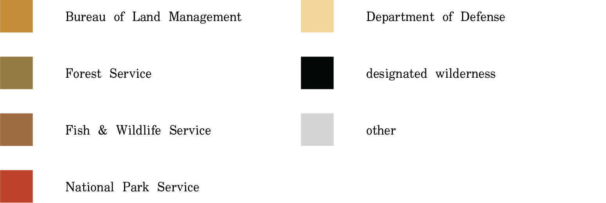

Introduction
"The time has come to rethink wilderness." William Cronan, The Trouble with Wilderness, 1995
The Wilderness Act of 1964 established a legal definition for the term wilderness and the National Wilderness Preservation System. This national network of federally-designated wilderness areas are nominated and protected by the Bureau of Land Management, US Forest Service, US Fish and Wildlife Service, and the National Park Service.

Chronology
In order for an area to become wilderness it must first be recommended and evaluated. It takes an act of Congress to designate a wilderness unit. This process may take years, or even decades.
Practical criteria for recommendations include (1) the area must be 5,000 acres in size or larger (or a roadless island) and (2) the area must appear to be natural (ie. without human presence). Wild lands that do not meet the criteria may be given a different designation with less strict protections.
Acres designated since 1964
Hover over a circle to learn which legislations were passed during what year. [Red circles indicate a Republican candidate was in office; blue, a Democrat.]
Individual units of wilderness designated since 1964
Hover over a circle to learn more about when individual wilderness units were designated and how many acres were conserved.
States
The following charts break down the percentages of public lands owned and managed by various federal agencies. The inner ring visualizes how much of the public lands of that state are federally-designated wilderness areas.

Nation
How much of America's public lands are managed with the strictest conservation principles? Click on the buttons below to see which agencies have the most untrammelled-by-man wild lands under their jurisdiction.
Wilderness designations per federal agency's land holdings
The federal government owns approximately 28% of land in the United States. The majority of federal lands is overseen by five agencies: Bureau of Land Management (BLM), National Park Service (NPS), Fish and Wildlife Service (FWS), Forest Service (FS), and the Department of Defense. Overall, only about 5% of the entire US is protected as wilderness. Alaskan wilderness accounts for almost half of the total; therefore, 2.7% is in the contiguous US.
Land ownership per federal agency
Data
The primary data source for these visualizations is collected and maintained by Wilderness Connect at the University of Montana.
About
This project was researched, designed, and developed by Spenser A. Krut for two visual studies electives at Columbia GSAPP: Coding for Spatial Practices with Celeste Layne and Data Visualization For Architecture, Urbanism, and the Humanities with Jia Zhang.
Published and last updated on December 20, 2021.
_go to top